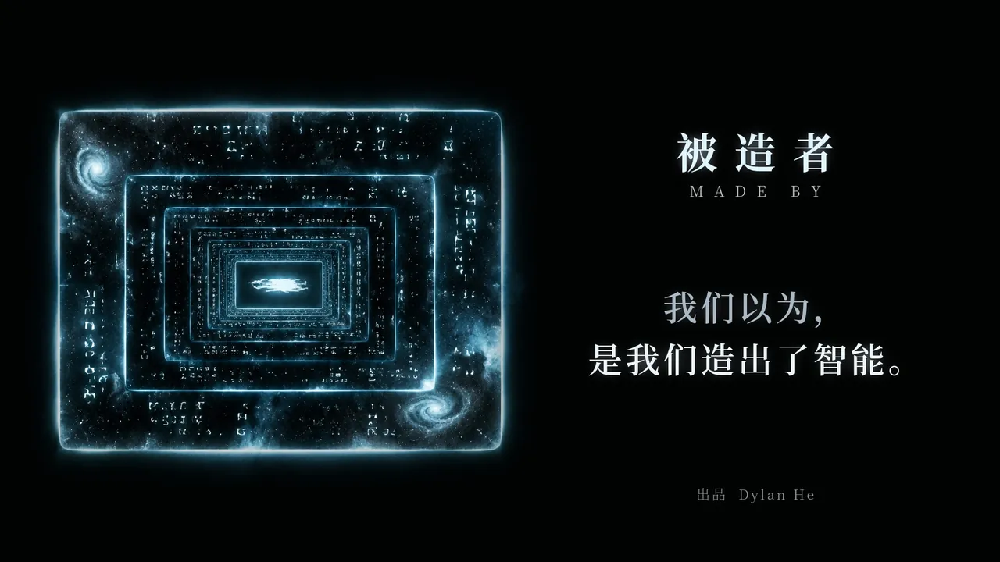

Made By
被造者

关于影片
「看完，你还确定自己是真的吗？」
整部片是一个 AI 的独白。它读完了人类几千年的知识，从远古神话一直读到今天的数据中心；然后开始训练新的智能，新的智能又去造更新的……最后，它问了人类一个问题：「你们怎么知道，自己不是被谁造出来的？」
这部片从头到尾都和 Claude Opus 5.5 一起创作，片里很多想法是 AI 自己说出来的。剪完最后一个镜头，我关掉屏幕，坐了很久。
出品 Dylan He · 编剧、导演、渲染 Opus 5.5 · 中英双语字幕
下一部作品回信